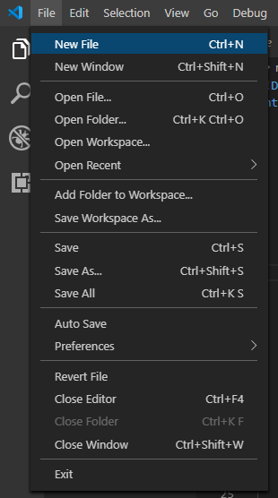
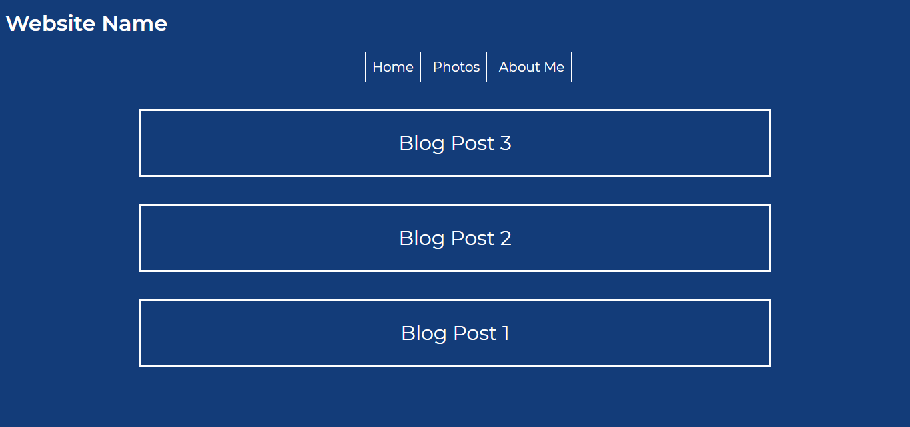
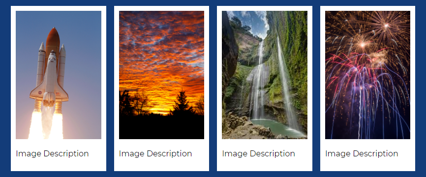

Now if we save and test our code we will see that our home page has the image and text but the other webpages do not.
Next, we will be laying out and styling our other web pages so that you can write / add information in them.
To begin this process we need to create other html files.
With the myblog.html file, we should begin by removing the header that currently says “Website Name”
Then, we should change one of the buttons that says “My Blog” into “Home.” To do this, go under the
The code should now look like this:
<a href="index.html">Home
Now we have a home button!
Since this is a blog, we need to set it up so we know how to add more sections so we can update our blog. To do this we are going to classify section tags.
Therefore, we need to create a section tag and follow the same steps as we did earlier with classifying the
tag:
<section class="blog">Blog Post 1
Where it says “Blog post 1” you can paste your first blog post!
Then, we are going to go into the style.css and write “section.blog”
This is how I decided to style it, but you should style it as you wish!
section.blog {color:white;margin-left: 200px;margin-right: 200px;background:rgb(19, 60, 121);border-style: solid;}
To add more blog posts, simply go to the myblog.html file and copy and paste the as many sections as you need above the previous blog:
<section class="blog">Blog Post 3<section class="blog">Blog Post 2<section class="blog">Blog Post 1
This is how the blog looks!
Now we are going to set up the Photo webpage!
Just as before, there are simple things that we should take care of, such as removing the part of the web page that says “Website Name” and rearranging the buttons so there is a home button.
<a href="index.html">Home<a href="photos.html">Photos<a href="aboutme.html">About Me
Now, we are going to set up the photo gallery.
In the photo.html file, we are going to begin by creating some selectors with divider, tags.
The first one will be < div class=“webpage” > followed by < div class= “row” > This defines the general aspects of the webpage and the rows of images.
The following lines of code can be copied and repeated for every image you wish to include. These lines of code are just more selectors as well as the image itself.
div class="webpage">div class="row">
The following lines of code can be copied and repeated for every image you wish to include. These lines of code are just more selectors as well as the image itself.
div class="column"><div class="content"><img src="rocketship.jpg" style="width:100%"><p class ="photos">Image Description/div>
Now that we have the images in place, we are going to go into the style.css file and style these aspects of the gallery.
We are going to add “div.webpage {” to the style.css.
div.webpage {max-width: 1000px;margin: auto;}
What this does is define the limits of the width of the image and center aspects of the webpage.
Next, we are going to edit the “body” by adding a padding of 20px:
body {padding: 20px;}
Now we are going to style the rows and editing the padding of the rows.
div.row {margin: 8px -16px;padding: 8px;}
Next, we are going to style the column section.
div.content {background-color: white;padding: 10px;}
The new “float” element allows for the alignment of the photos one after another.
For the content section, we are going to edit the background color and the padding.
p.photos {color: black}
Finally, we are going to edit the paragraph font:
Now we have a nice polaroid effect for our images!
Finally, for the “About Me” section, we just need to change one of the buttons to home and then we have to delete the tag where it says “Website Name”.
Then you write a description about yourself in this section!
Here is the code:
About me...
We are done with our website!
You can now apply these skills into any website you hope to develop!
Here is the code for the website:
Website CodeUpon completion, please send a screenshot of your final project our email to receive your completion certificate!